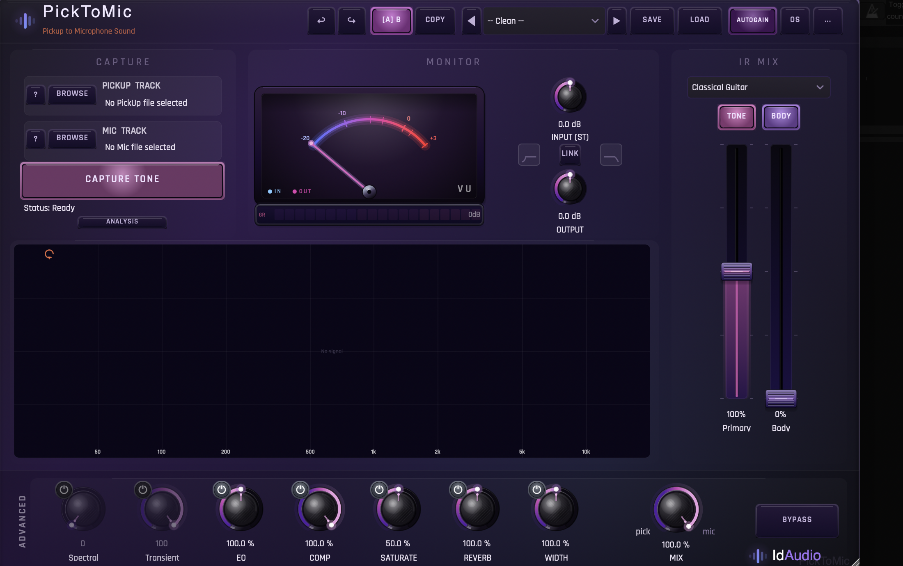
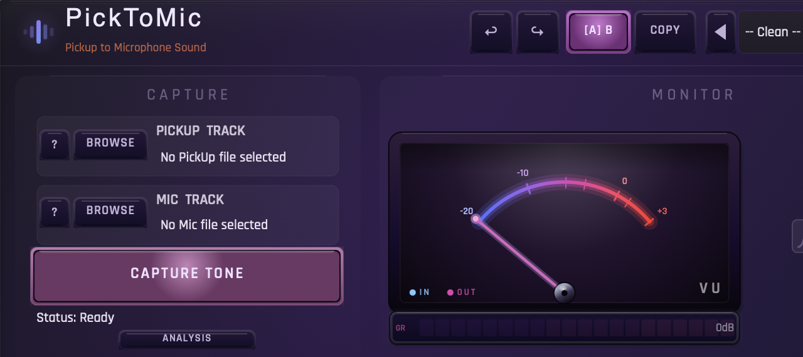
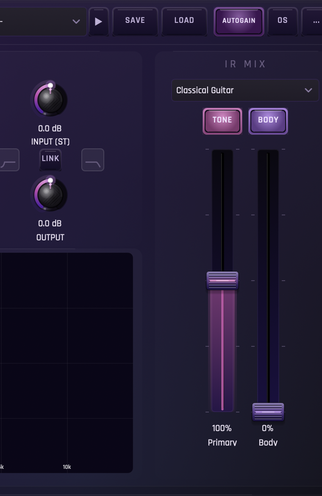
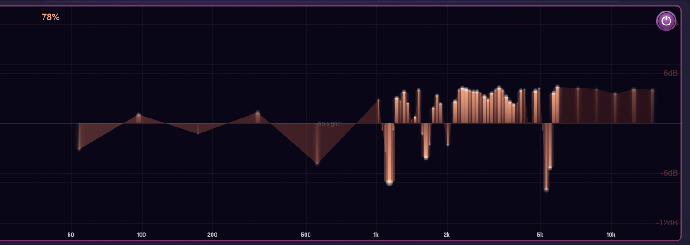
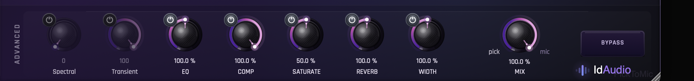
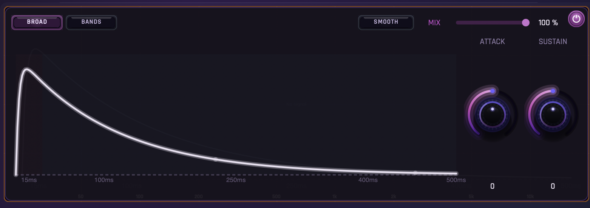
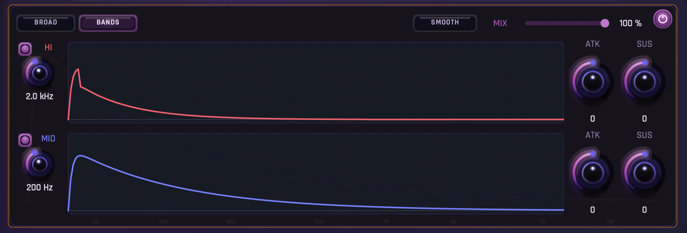
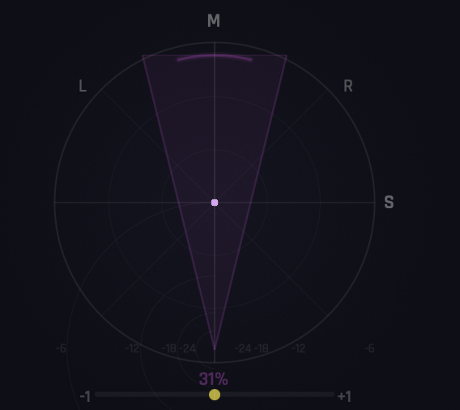
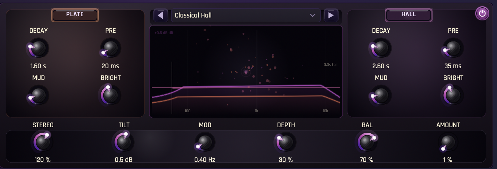

From a pickup
to a microphone.
PickToMic listens to a pair of recordings — a DI and the same performance through a mic — and learns the path between them. Drop it on any DI track and play the mic.
01 — Welcome
Feed PickToMic two files of the same take — a DI from your pickup, and a mic recording you love. In a few seconds it builds a portable tone you can apply to any future DI in real time.
The interface is built around one idea: the journey from the pickup to the mic. Everything else — faders, tone, reverb, saturation — is there to taste it, not to question it.

02 — Quick Start
- Insert PickToMic on your DI track Mono or stereo — the plugin adapts.
- Browse a DI file The dry signal from your pickup.
- Browse a Mic file of the same take The same performance through any mic you love.
- Press Capture Tone A few seconds. PickToMic builds three impulse responses.
- Play your DI Blend the faders. Save the preset. You’re done.
03 — Capture
The Capture panel is where the two files meet. Drag them in, or use the Browse buttons. Once both are loaded, Capture Tone becomes active.
When the capture is complete, the three IR faders animate to their suggested mix. Press Lock IR if you want to keep this exact tone while you audition presets.

04 — IR Mix

Each capture produces two impulse responses, blended into a single signal. The dome above each fader toggles it on and off. Pull a fader down and that character recedes; bring it up and it leans into the mix. Reset Mix restores the suggested blend from the original capture, and the preset selector above the faders — Classical Guitar, Acoustic, and more — switches the entire factory profile in one click.

The dome above each fader doubles as a focus button: tap it and the spectrum panel switches to a live FFT of just that IR — the orange bars on the right show the pickup’s upper harmonics, the polygonal trace on the left traces the body resonances. Pull the fader and watch the response curve breathe in real time.
05 — Advanced
The Advanced row sits below the spectrum display. Every knob moves the sound on a single axis — no hidden cross-coupling. The dome above each knob bypasses that stage; the label below opens its detail popup where one exists.

- Spectral
- Tonal correction from the IR toward the mic reference. 0% off, 100% full.
- Transient
- Attack and sustain shaping. Click the label for the detail popup.
- EQ
- Scales the captured EQ bands. 100% as captured, 0% flat.
- Comp
- Dynamics control with a musical knee. Click the label for the detail popup.
- Saturate
- Harmonic warmth in parallel. Click the label for the detail popup.
- Reverb
- Dual-engine plate & hall, tuned for acoustic sources. Click the label for the detail popup.
- Width
- 0% mono, 100% as captured, 200% extra wide.
- Mix
- Pick ↔ Mic blend — the global dry/wet of the captured chain.
The two global level knobs — Input and Output — live to the right of the spectrum, with a Link toggle for inverse gain staging.
Transient — Broad & Bands

Click the Transient label to open the shaper. The right side carries two large knobs — Attack sharpens or softens the leading edge of each note; Sustain stretches or trims the body. Mix sets parallel blend, and Smooth slows the envelope follower for less pumping on slow material. The big curve in the center is the live envelope — the shape you’re actually applying to every note.

The Broad / Bands toggle (top left of the popup) switches between a single full-range envelope and a two-band split: a high band (red) for plectrum and pick noise, and a mid/low band (blue) for body. Each band gets its own Attack and Sustain pair on the right — useful when you want to tame plectrum on the highs while letting the body breathe.
Width — M/S field

Click the Width label to open the polar view. The compass shows where the signal sits in the stereo field — M at the top (center / mono), L / R on the sides, and S on the right of the dial for the pure sides component. The wedge narrows toward mono at the bottom of the slider and opens out as width climbs above 100%. Drag the slider beneath the compass to set the amount — the wedge updates live as you move.
06 — Reverb
Click the Reverb label to open the popup. Two engines — Plate and Hall — run in parallel, each with its own decay, pre-delay, and tonal controls. The tail visualises in real time between them.
The bottom row carries the shared modulation and balance: Stereo, Tilt, Mod, Depth, Bal (Plate ↔ Hall), and Amount. Pick a factory space from the menu at the top — Classical Hall, Studio Plate and more — or sculpt your own.

07 — Saturation
Click Saturate to open the popup. You’ll see a live channel strip with the dry input on the left and the saturated output on the right, plus a real-time spectrum showing the harmonics you’re adding.
The Amount knob mixes the saturated signal in parallel. The character stays the same; only the intensity changes.
08 — Presets
The factory library covers acoustic guitar, electric, bass, voice and more — each with Direct, Mix and Producer variants. Pick a preset and only the tone knobs move; your captured IR stays untouched if Lock IR is engaged.
Save writes your current state — IR plus knobs — into a single .ptm file you can share or back up. Presets live in the Settings menu under Open Presets Folder.
09 — A/B
Toggle between A and B to compare two configurations instantly. Copy duplicates the current state into the other slot so you can branch from a known-good sound. Full undo / redo is always available.
10 — Themes
Open the Settings menu → Theme. The plugin ships with six palettes, from deep neon to warm wood to paper-white. Choose Set Current as Default and every new instance opens in your colour.
11 — About
PickToMic was designed and developed by Idan Armoni. The capture engine, the IR set and the tone chain are tuned to keep the listener — not the meter — in the centre of the room.